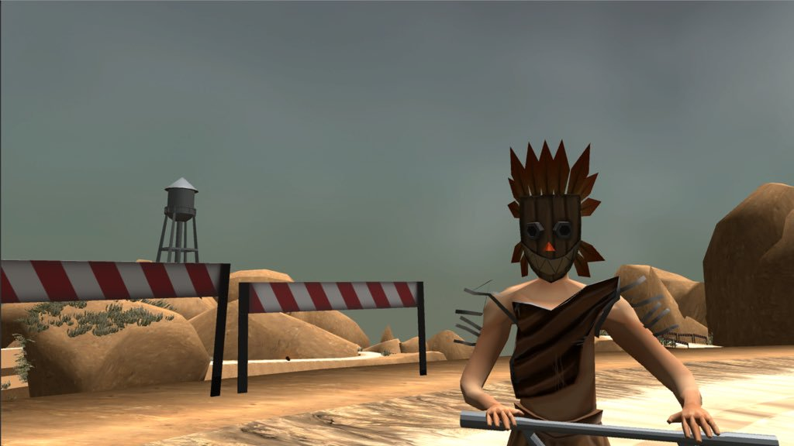

NasChair - 2nd Year Game Project
NasChair is a local multiplayer racing game, based in a post-apocalyptic world where the only mode of transport is office chair, The games unique mechanic was the movement system, it was based around a timing based propulsion system, where the players would have to time their buttons presses to an onscreen prompt to get the maximum amount of propulsion, this really set the game apart from other racing games as it adds a real element of skill to the gameplay and makes it much more competitive in a local setting.
NasChair was my 2nd year collaborative game project, the game was created by a team of 11 people from all routes and was completed over 9 months. The game was made in Unity 5.6.3f1, much like first year with Unreal, this was my first year using Unity for the group project, and even though I have had some experience with Unity before back in college and in a few projects in first year, the project was a steep learning curve for me as I was working with some very experienced Unity programmers so while working with them was struggle, it was a good experience as it really pushed me to learn more C# as this was a language I previously had little experience with, and as it an industry standard language and would help in the future it was important that I got familiar with it.
As this project falls into the racing game genre, I wanted to capitalise on this opportunity is one that I am extremely passionate about as I am also extremely interested in cars, and in the future I want to work at a games company such as Codemasters or Playground Games that specialise in racing games. My contribution to the game included creating parts of the AI system that the player can race against, which utilised the spline system that were thn placed around the tracks in the game, where the AI would then follow closely but could also deviate from the line to take alternate paths which made the AI much more realistic. I also worked on parts of the movement system and a fair few of the weapons that are in the game, as well as the lap system. These features tie in to most racing games so hopefully they will be useful to show in any future employment scenarios
The trailer for the game can be found here. This shows off some off the features that I worked on as well as the aformentioned local multiplayer gameplay.